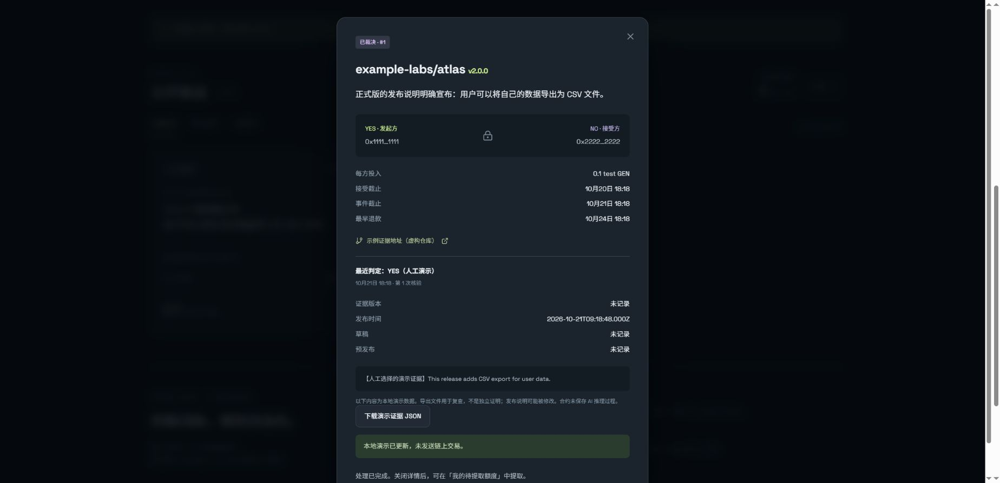
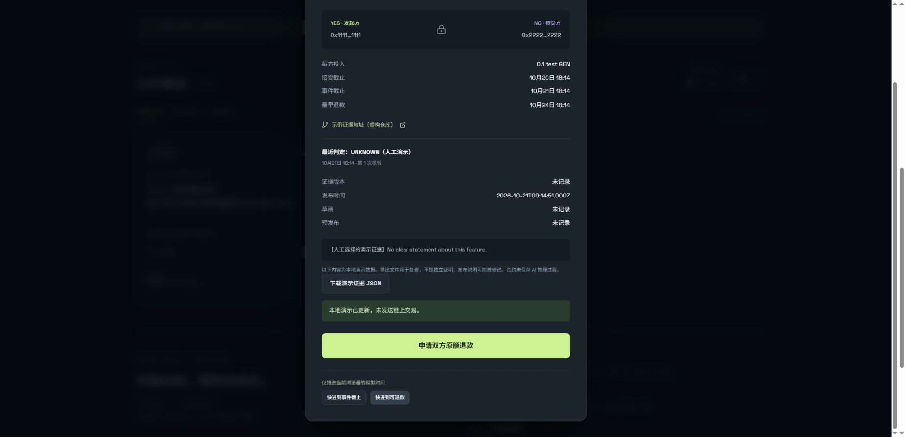

DEMO & VERIFICATION · 2026-10-19
A claim. Fixed terms.
Evidence you can inspect.
Legacy writes paused; candidate awaits finality. The first legacy create is FINALIZED with FINISHED_WITH_ERROR. Its 0.001 test GEN reached the legacy contract while no duel or credit was created; recovery is unverified. The deposit-first 0.2.0 candidate deployment executed successfully and matches the reviewed source, but is still ACCEPTED. No new deposit should be sent before finalization and source verification. Inspect failed create.
Two wallets lock equal testnet deposits around one GitHub release-note claim. A GenLayer Intelligent Contract reads the agreed release and records YES, NO or UNKNOWN. This page separates the reproducible local demonstration from actual Bradbury evidence.
Reproduce the local flow / 本地演示步骤
Local demo only: fictional repository, manual verdict selection, simulated time and balances. It does not call AI, use a wallet or broadcast transactions.
- Create and lock the terms
Choose 体验演示, then 重置示例 for a clean start. Use 发起一个挑战 to set a repository, release tag, feature claim, deadlines and deposit. Inputs below 0.001 test GEN are rejected.
- Accept with the second participant
Close the details, use the top-right 演示甲方 · 切换 button, reopen the challenge, and choose 支持 NO. The counterparty contributes the same amount. Before the event deadline, settlement is unavailable.
- Inspect a YES or NO result
Choose 快进到事件截止 and select YES or NO. This selection is manual. Inspect the evidence panel and 完整 JSON record. Close the dialog and switch to the winner: the credited amount is twice the deposit. 提取 sets that local credit to zero.
- Try UNKNOWN and the refund path
Reset the sample, switch to participant B and accept. Fast-forward to the event deadline, choose UNKNOWN, and verify that the retry controls are disabled for five simulated minutes. Choose 快进到可退款, then 申请双方原额退款. Each participant receives one deposit in local credit and can separately withdraw.
- Try cancellation
Reset again as participant A. Cancel the unmatched challenge, confirm the credit belongs to A, then withdraw. These operations cannot settle the same sample twice.


Deposit-first candidate · deployment accepted
Frontend 0.2.0 uses a separate deposit entry point. Create and accept lock existing credit and send zero new native value. Candidate 0x3D53d6546A81e64Aa17A1472A2B101e7479905Ca was deployed by the connected wallet. At the recorded check, its deployment is ACCEPTED with FINISHED_WITH_RETURN, its complete source matches the repository, and accepted count/locked/owed are zero. Finalized state is not yet readable. Do not redeploy or deposit while waiting.
Candidate deployment receipt · Timestamped chain snapshot · Read-only GenVM candidate checks · Candidate source and limitations
The remote GenVM constructor and a read-only deposit/create/rejection/cancel/withdraw harness pass. They do not prove independent live transactions or external payout. Legacy writes remain disabled. The frontend only enables candidate writes after a successful finalized deployment and an exact source match. The next live test is a minimal deposit followed by withdrawal and verification of the actual external transfer, before funding a duel.
Reproduce the Bradbury checks
Run npm run check:candidate-live for candidate receipt, complete source, accepted/finalized ledger and external balance. Add -- --require-finalized to require successful finalization; no command signs or broadcasts. Snapshots contain their observation time and are not a live monitor.
Read-only loading in the app does not require a wallet. Choose 连接测试网, select 最终确认 and 加载合约, then verify the version against the audit JSON. The default legacy contract remains paused. An existing candidate deployment is recovered using 继续查询最终状态, preserving its transaction record. Only after finalization should two distinct wallets on chain 4221 proceed through the live test plan. Every transaction records its hash, sender, attached amount in exact wei and latest raw receipt in this browser. The legacy snapshot can still be refreshed with npm run check:live.
What remains unverified
Actual payable calls, independent AI consensus, live UNKNOWN/refund transactions and external payouts. A successful parent withdraw receipt alone does not prove the emitted transfer reached the wallet. Release notes can be edited by repository owners; the app evaluates the recorded text claim, not actual software functionality. JSON exports are review aids, not cryptographic proofs.
Browser automation did not confirm a saved download file. Records are also displayed as JSON in the page for inspection if the browser blocks downloads.